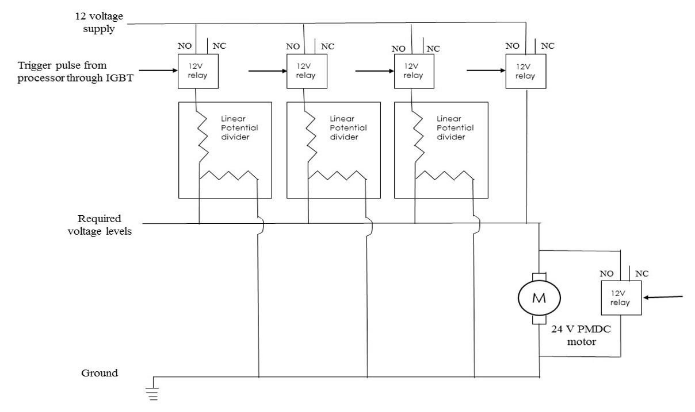

Twitter Clone using distributed systems with Elixir and Phoenix framework
Goal
To design, develop and construct a real-time working Twitter engine clone
Motivation
To learn and implement distributed software system using Elixir and Phoenix framework
Twitter Clone Demo
Real-time Embedded system for Differently abled and Senior citizens (R-E-D-S)- B.Tech Final Project
Guide:
Dr.S.Moorthi, Associate Professor, Department of Electrical and
Electronics Engineering, NIT Trichy
Goal
To design, develop and construct a prototype of real-life working product - a portable electric vehicle with a real-time embedded system and Android application UI for differently-abled and senior citizens, R-E-D-S
Motivation
Inspired by Segway, I wanted to make a potable 1 seater transport with more stability and safety for differently abled and senior citizens
GENERAL BLOCK DIAGRAM OF THE SYSTEM (R-E-D-S)
ANIMATED MODEL
USER INTERFACE
Graphical design is the key feature
An android mobile is used as the interfacing device which controls speed, direction and brakes.
This application is also used as the display for monitoring different important parameters like voltage, current, speed, etc.
BLUETOOTH COMMUNICATION
HC-05 module, Bluetooth SPP (Serial Port Protocol) is used for communication between UI and Embedded System.
MSP430 G2553 micro-controller is used to operate HC-05 and interface it with embedded system.
REAR DRIVE CONTROLS
Four 15 A relays are used to control the speed of the motor.
The triggering of the relays are controlled using MSP430 G2553 and IGBTs

STEERING CONTROLS
Two 15 A relays are used to control the direction of rotation of motor.
The triggering of the relays are controlled using MSP430 G2553 and IGBTs.
SENSORS
Non-Invasive Hall sensor is used to measure the armature current.
Voltage divider is used for measuring Terminal Voltage.
Temperature sensor LM35 is used to measure system temperature.
Speed is calculated using the load characteristics of PMDC motor used.
ROBOTIC ARM EQUIPPED SOLAR POWERED HYBRID ELECTRIC WHEEL CHAIR
Guide:
Dr.S.Arul Daniel, Professor, Department of Electrical and
Electronics Engineering, NIT Trichy
Texas Instruments Innovation Challenge India Design Contest 2015
Abstract
People confined to wheelchairs typically face a lot of difficulties in in performing basic tasks like locomotion, eating, opening doors and moving objects around. Our wheelchair is intended to enable these people to lead more independent
lives. It is equipped with a pair of 6 DOF robotic arms, with a reach of 1.2m and a payload of 700 gms. Existing electric wheelchairs can only operate for a few hours on battery power. Solar powered hybrid electric wheelchairs
mitigate this problem by using a solar panel to charge the batteries whenever sunlight is available. “Perturb and observe” or other MPPT based algorithms are often used to maximize power output.
Our project aims to increase the solar power efficiency by combining the existing Perturb and Observe algorithm with a 2 DOF mechanical solar tracking system so that the Pertub and Observe algorithm is always applied at the point
of maximum light intensity.
The motion of the wheelchair is controlled by head tracking done using image processing on a Beaglebone. The motion of the end effector of the robotic arm will be controlled by tracking the user’s eyeballs. The inverse kinematics
of the robotic arm will also be handled by the Beaglebone. The arm is designed to perform coordinated tasks such as reading a newspaper, eating using a spoon or pouring water into a tumbler. Our goal is to develop this as a
low cost and eco-friendly alternative to existing electric wheelchairs so that more disabled people have access to technology that improves the quality of their lives.
Entry to Texas Instruments Innovation Challenge India Design Contest 2015 Working Demo
SMART WATCH
Goal
To design, develop and construct a prototype of real-life working product - a multipurpose smart watch which displays messages and missed calls which are received by our mobile phone under $30.
Abstract
A message is received by our mobile phones or we miss a call. Using an app which is developed by me, we send the number and the message received to the msp430 present on the watch using bluetooth
The message received along with the number is displayed on the lcd screen
The watch constantly shows the time by updating the internal timers of the msp430.
Achievement
Sangam 2014 Second Runner-up, Sangam Pragyan - 2014 among over 300 participating teams competing in various fields and technologies
Entry to Pragyan,
Sangam - A
Technical project display contest
GENERAL BLOCK DIAGRAM
WIRELESS NON INVASIVE FLOW METER
Guide:
Dr.G.Saravana Ilango, Associate Professor, Department of
Electrical and Electronics Engineering, NIT Trichy
Goal
To design, develop and construct a prototype of real-life working product - a wireless non invasive flow meter.
Abstract
Developed a wireless non invasive flow meter using ultrasonic sensor us-020, MSP430 microcontrollers, HC-05 bluetooth module and android application developed by myself, capable of measuring the flow rate of fluid inside a pipe.
Implementation
Developed an android application which displays the flow rate. Also the configuration parameters such as the material index of the pipe and fluid, thickness of the pipe and distance between the ultrasonic transmitter and receiver
The configuration parameters are passed from the android app to MSP430 via bluetooth using HC-05.
Necessary calculations are done in MSP430 to calibrate the setup and start measuring the flow rate.
The ultrasonic wave is sent through the pipe and received by the receiver. The Time delay between transmission and reception is used to calculate the flow rate.
Calibrated embedded system will send the flow rate to android app via bluetooth using HC-05
WIRELESS HOME POWER MONITOR
Guide:
Dr.G.Saravana Ilango, Associate Professor, Department of
Electrical and Electronics Engineering, NIT Trichy
Goal
To design, develop and construct a prototype of real-life working product - a wireless home power consumption monitor.
Abstract
Developed a wireless home power consumption monitor using non-invasive current sensor, potential divider voltage measurement sensor, MSP430 microcontrollers, HC-05 bluetooth module and android application developed by myself, capable of measuring the
power consumption in a home.
Implementation
Developed an android application which displays the real-time Voltage, overall load (Current), power factor and Power.
Zero crossing circuit has been used for calculating power factor
The real-time power is used to plot a graph between Power and Time, Power factor and Time.
This data can be used to identify the spikes and surges vs the time.
This data can also be used to regulate the power consumption.
Results/Impact:
All of these projects are focused on developing systems which will aid in conserving electrical energy and introduce automation in residencies which will ease the user with an effective control medium.